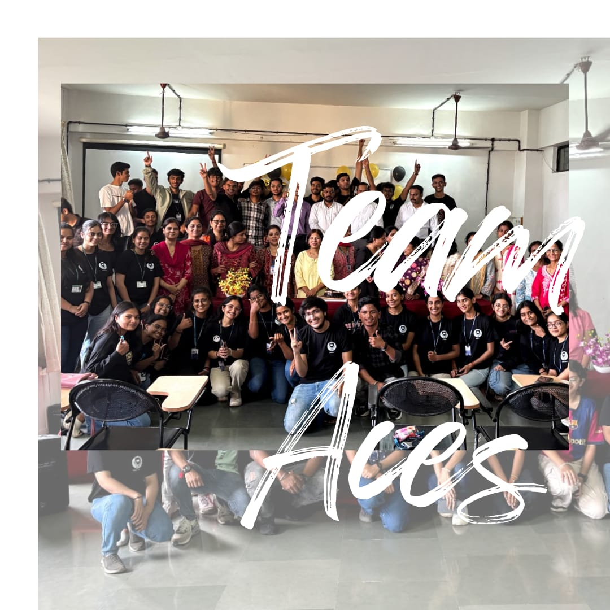

Learnings from aces
Aces always made me curious about it,until BE farewell as it was the 1st event with the team.
From being geet at se induction to being member of aces.
Journey taught me a lotta things.Being an ambivert it taught me to Socialize more with your colleagues, your opinion may turn out into a grt idea for future outputs.
Meet new minds, new thoughts and made some amazing ppls here.
Gave a room for my skills to put in,for department and team.
You will face problems but do clam se Kaam,balancing aces with academic and cultural taught me time management and prioritizing work.
Aces improved professional approach of working on things, gave an experience leadership.
Breaking a brick alone is harder than breaking it together, its a teamwork which give better outputs at the end of the day.
Your opinion may not be same in team but someone out there may have a better paln around.
Focusing on one thing make you more productive and your work more worthy than involving in many.
Aces,not only a department team but lot more than that, have made me grow not only professionally but personally too.